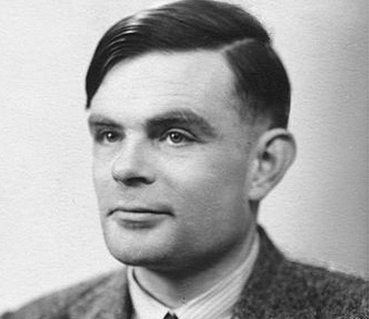

엘런 튜링
출생 : 1912. 06. 23 영국
사망 : 1954. 06. 07 (향년 41세)
영국의 수학자, 암호학자, 컴퓨터학자. 케임브리지 대학교의 킹스 칼리지를 졸업하고 같은 대학의 교수직을 맡았다.
컴퓨터과학의 아버지이자 현대 컴퓨터과학을 정립한 인물로 평가되며, 제2차 세계대전이 발발하자 정부의 요청에 따라 나치 독일군의 에니그마 암호 해독을 맡아 연합군 승리에 기여, 세계대전 기간 단축 및 대략 1400만 명을 구했다.
종전 후 민간으로 복귀했으나 1952년 당시 영국에서 불법으로 취급되던 동성애 혐의로 체포되어 화학적 거세형을 받았고, 2년 후인 1954년 자택에서 숨진 채 발견되었다. 사인은 청산가리 중독이었고 자살로 추정되었으나 석연찮은 부분이 있어 유족과 일부 역사가들은 사고사를 주장했다.
이후 성소수자 인권이 수면에 떠오르고 잘못된 인식들이 바뀌기 시작하며 튜링에 대한 사면복권 얘기가 나오기 시작했고, 2013년 12월24일, 엘리자베스 2세 여왕이 법무부 장관의 제청을 받아 군주의 권한으로 특별사면하였으며, 그의 성적 지향을 빌미삼아 그를 옭아맨 법률조항이 위헌으로 선언됨에 따라 무죄 판결이 내려지면서 완전히 복권되었다. 사후 59년 만이었다.
